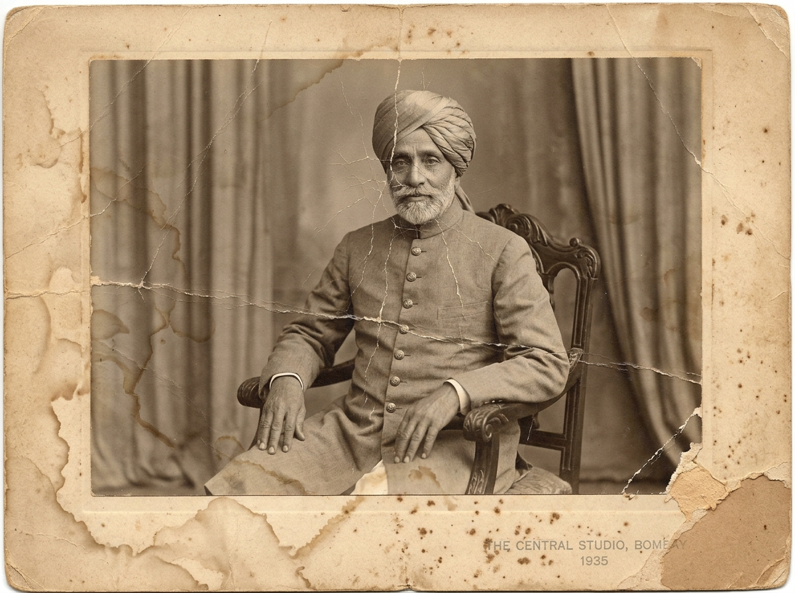
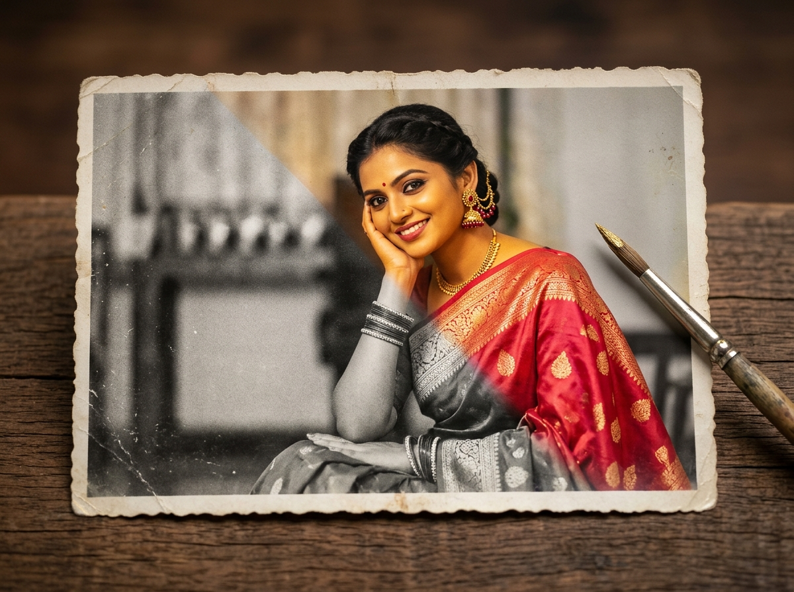

Guardians of the Moments That Made Your Family Who They Are.
Founded in 2012 inside a quiet heritage loft in Mumbai’s Kala Ghoda art precinct, MEMORA STUDIO began with a single conviction: a family’s most priceless inheritance isn’t locked in a bank vault—it lives inside shoeboxes of fading photographs.


14 Years
Of Museum-Grade Digital & Physical Conservation
From Analog Darkroom to India’s Premier Conservation House
The Kala Ghoda Darkroom
Started by two fine-art printmakers and a museum paper conservator with a single drum scanner and a passion for rescuing pre-1950 silver gelatin prints.
Italian Layflat Bookbindery
Partnered with third-generation leather tanneries in Florence and German cotton-rag paper mills to launch our bespoke heirloom album division.
Historical Color Archive
Built an internal reference library of over 12,000 authentic 19th- and 20th-century Indian and global textile, uniform, and architectural color swatches.
48,500+ Restored Works
Serving families across India, the UK, USA, UAE, and Singapore with a team of 26 full-time restoration artists and master bookbinders.

ARCHIVE PHOTO • OUR ORIGINAL OPTICAL SCANNING BENCH (1935 CENTRAL STUDIO PLATE)

PRESENT DAY • CALIBRATED HAND COLORIZATION & RESTORATION ATELIER (2026)

“To restore a photograph is to build a bridge between grandparents and grandchildren who may never meet in person.”
Our Mission & Vision for Generational Storytelling
Our Mission
To rescue endangered personal and cultural photographs from physical decay through uncompromising human artistry, delivering archival prints and heirloom albums that endure for 150+ years.
Our Vision
To set the global benchmark for ethical, museum-grade family archive preservation—where technology serves the hand of the artisan rather than replacing emotional authenticity.
Meet Our Master Conservationists & Bookbinders
Every project is signed off by a department head with over a decade of fine-art restoration or archival bookbinding experience.

Vikramaditya Sen
Former museum paper conservation fellow; 18 years specializing in 19th-century albumen and silver gelatin plates.

Meenakshi Iyer
Fine-art portraitist and textile historian leading our multi-layer black-and-white colorization studio.

Farhan Qureshi
Trained in Florence; oversees hand-sewn spines, Tuscan leather paring, and 24k gold leaf monogramming.

Devika Menon
Curates family narratives, genealogical family trees, and bilingual calligraphic captions for heritage books.
Why Over 19,000 Families Entrust Their Most Fragile Memories to Us
1. Uncompromising Quality
16-bit optical pipeline and museum giclée inks rated for 150+ years.
2. Obsessive Detail
Every eyelash, pearl, and handwritten margin note preserved with reverence.
3. Absolute Privacy
Zero public sharing without consent; optional automatic vault purge on completion.
4. 100% Satisfaction
Unlimited proof revisions inside your Customer Portal before final print approval.